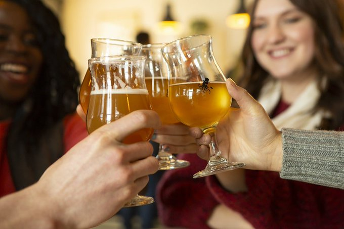

The Dandy Brewing Company is Calgary's original small brewery. Although it has grown a little, it's still
small at heart. We produce inspired ales, with lots of care, in small batches.Our unique approach to brewing and
keen eye to every detail and fosterscreativity in both our recipes and beer styles.On site, we are pleased to offer
a unique brewery experience, featuring a full service tasting room with an exquisite menu of fine dining drinking food,
a curated selection of cocktails, glass pours of selected wines, and 20 taps of Dandy beers. We share a passion for
not only brewing, but the people, process, experiences, and personal touches that make the real ale experience so special.
JOIN THE FAMILY OF FLAVOURS
One thing which makes us diffrent from others breweries is diffrent flavours that we provide to our
customers.We have gained the skill to mold any flavours into beers and ales .Our most famous beers
are Purple haze ,Light Lime , Strwaberry and many more,to see full list of flavours , click image below
Promoting Beer Culture
We are not only known how to make best beers and ales in alberta , we also known to promote beer culture
through many ways. Dandy Brewing Co is endorsing many artist , we encourage the artist to collaborate
with dandies in events.To konow more about this program , please click on the following image.

The Tasting Rooms rooms
We are running a special program call The Tasting Rooms to give you a better Idea what we make.
We provide you res 20 taps of Dandy Beers (maybe a few rad guest taps), a curated cocktail list
featuring local spirit, a daily selection of top quality wines available by the glass.To get to
more about this program , please click the image below.